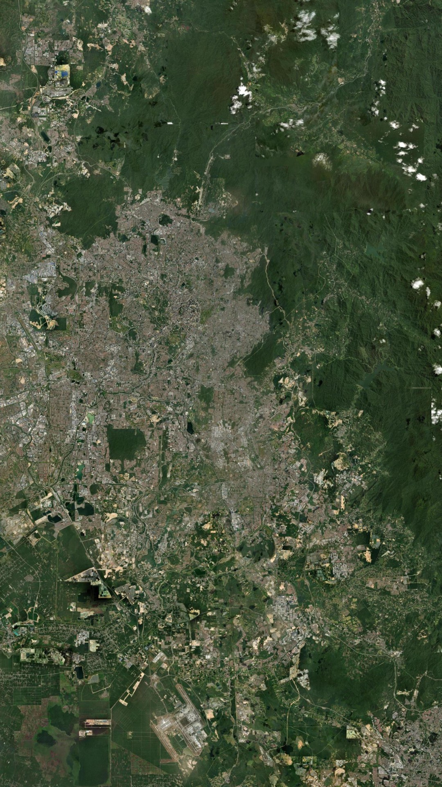
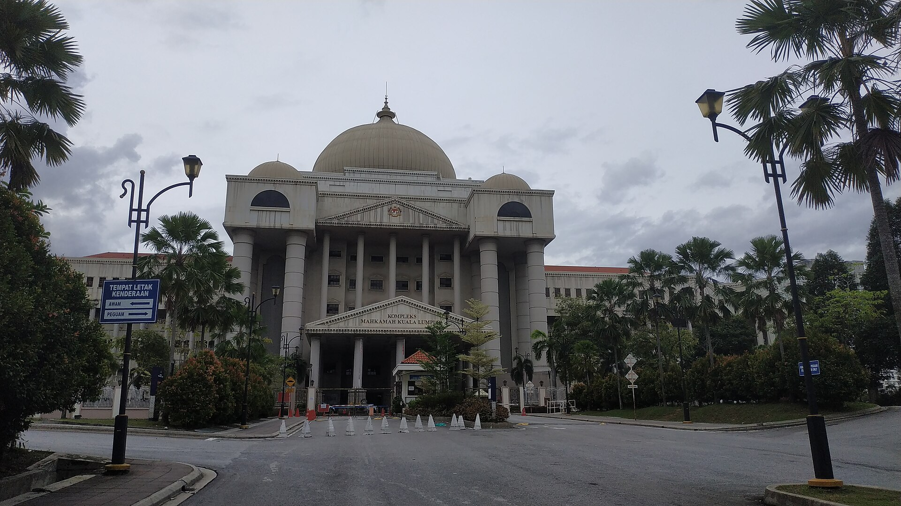
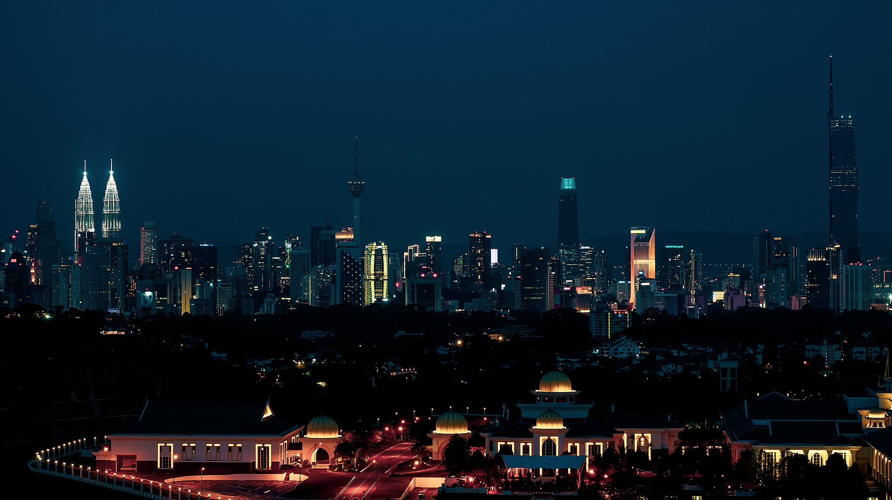

Kuala Lumpur · 10 Nov 2026
RUMAH INI
SEKARANG
PENJARA
SEKARANG
PENJARA
Langgak DutaDIWARTAKAN SEBAGAI PENJARA
Imej satelit: Esri, Maxar, Earthstar Geographics

Penjara Kajang
Langgak Duta
Semalam · 10 November
DARI KAJANG,
BALIK KE RUMAH
BALIK KE RUMAH
Imej satelit: Esri, Maxar, Earthstar Geographics

Kes SRC International
Dana terlibat
RM42 JUTA
Hukuman asal · 2020
12 TAHUN
Denda asal
RM210 JUTA
Foto: Kerajaan Malaysia / Wikimedia Commons, CC BY-SA 3.0

Lembaga Pengampunan · 2024
Penjara
12 TAHUN
6 TAHUN
Denda
RM210 JUTA
RM50 JUTA
Foto: Renek78 / Wikimedia Commons, CC BY-SA 4.0

18 September 2026
PENGAMPUNAN
BERSYARAT
BERSYARAT
Ogos 2022
masuk Kajang
masuk Kajang
Nov 2026
ke rumah
ke rumah
23 Ogos 2028
tamat
tamat
Foto: Azreey / Wikimedia Commons, CC BY-SA 4.0
Denda · 6 November
RM50
JUTA
JUTA
DIBAYAR
Dilaporkan: kutipan dana UMNO

Tahanan rumah
BUKAN BEBAS
1Pelawat perlu kebenaran Jabatan Penjara
!Langgar syarat: balik ke Kajang
Imej satelit: Esri, Maxar, Earthstar Geographics
Dua pandangan · 1 / 2
Penyokong kata
Ini kuasa pengampunan dalam Perlembagaan.
Dia sudah lebih 4 tahun dalam penjara.
Dua pandangan · 2 / 2
Pengkritik tanya
Banduan biasa dapat peluang sama?
Anthony Loke
Letak jawatan Menteri
Pengangkutan, 10 Nov
Pengangkutan, 10 Nov
Foto: C.W. Tan / Wikimedia Commons, CC BY-SA 4.0
Belum habis · Kes 1MDB
Penjara
15 TAHUN
Denda
RM11.4 BILION
Masih dalam rayuan
Foto: Kerajaan Malaysia / Wikimedia Commons, CC BY-SA 3.0
Kau rasa?
ADIL?
ATAU
DUA
DARJAT?
DARJAT?